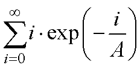
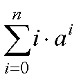
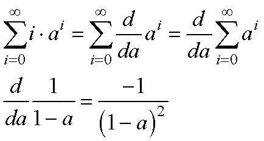
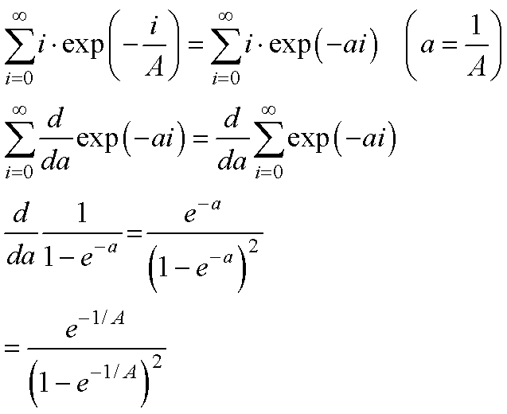
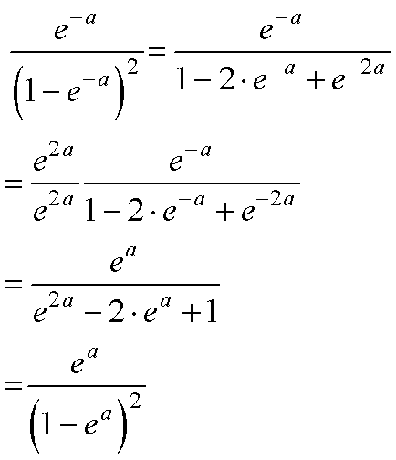

の求め方．
さて，この式では，先のべき条項に，もう一つかけ算がついています．
これは，よく平均値などを求める時に必要な式です．
まずは，簡単な式，

から．
これを解くには，微分を使います．
微分と和の記号を交換することによって（これの証明は私はまだ確認していません，ここが生物物理のいい加減なところ)，先の基本問題に落とし込むことができます．

簡単でしょう，微分と和の記号を交換することに対することに対する是非は置いておいて．．．
後は，指数関数でも同じです．

ちなみに，指数関数の方がプラスの場合とマイナスの場合が教科書にいろいろ載っていますが，同じです，以下の式の展開を見てください．

以上で，無限和の求め方の説明は終了です．